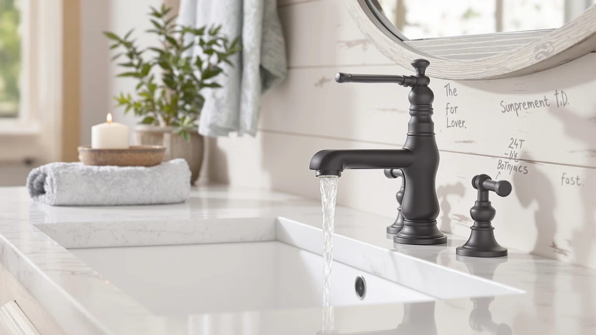

Best Tall Bathroom Faucets for Vessel Sinks (2026)
Prices and picks verified as of August 2026. Independent, reader-supported reviews.


Quick Answer
After comparing seven bathroom faucets and faucet accessories for vessel sinks against the height and reach a raised basin demands, the KPW Bathroom Sink Faucet 2 comes out as the pick for most budgets at $19.99. Its two-handle brass build costs less than the name-brand centerset options here, and the lineup below covers a compact RV-style faucet, a 4-inch Fransiton model, the Pfister Willa centerset, and two Brita faucet-mount filters for anyone who wants filtered water at the tap.
Our pick: KPW Bathroom Sink Faucet 2 — $19.99 Check Price on Amazon
Bottom line: our top pick is the KPW Bathroom Sink Faucet 2 or 3 Hole Matte Black Centerset 4 at $19.99. The best budget option is the 3pcs Hot and Cold Water Faucet Indicator Compatible with at $5.49.
Things to Know Before You Buy
- Height and reach decide the shortlist. A vessel basin sits on top of the counter, so a faucet spout needs enough clearance to reach over the rim. Check the handle and mount style before you buy, since not every faucet here targets a raised basin in the same way.
- Handle configuration varies across these picks. The KPW and EXCELFU use a two-handle layout, the Fransiton and Pfister Willa are 4-inch centerset models, and the Sinbana set splits hot and cold across three separate pieces.
- Brand name affects price more than it affects basic function here. Pfister, an established plumbing brand, costs $82.27, while the unbranded KPW and Sinbana options run $19.99 and $5.49. Owners report similar day-to-day performance across tiers as long as the brass body holds up over time.
- Two picks are filters, not faucets. The Brita faucet-mount water filters attach to an existing faucet rather than replace it, so add one only if you already have a faucet installed and want filtered water at the tap.
- Price spans from $5.49 to $82.27. That range lets you match a budget-friendly faucet or accessory to your needs without settling for a listing reviewers flag for leaks or loose hardware.
The best tall bathroom faucets for vessel sinks solve a problem a standard faucet was never built for: a vessel basin sits several inches above the counter, so the spout needs extra height and reach to clear the rim without splashing. We researched seven faucets and faucet accessories that get paired with vessel sink setups, weighing handle configuration, material, brand reputation, and price against what a raised basin actually needs.
Our top pick is the KPW Bathroom Sink Faucet 2 at $19.99. Its two-handle brass design keeps the price low without dropping to the flimsiest hardware in this category, and it gives you a straightforward option if your vessel sink is drilled for a standard two-handle mount. The EXCELFU RV Bathroom Sink Faucet matches that price with a more compact build suited to tighter counters, and the name-brand Pfister Willa centerset is the upgrade pick for buyers who want a recognized manufacturer behind the warranty.
The rest of the lineup rounds out the buying decision. The Fransiton 4-inch faucet and the Sinbana 3-piece hot and cold set give you two more price points to compare, and the two Brita faucet-mount filters cover a different need entirely: filtered water at a tap you already own. Below, we walk through how we picked these seven, how we compared them against each other, and where each one earns its spot.
Why You Should Trust Us
Ilane Tall has spent years writing about bathroom fixtures and home upgrades, with a focus on matching a product's actual specs and owner feedback to what a listing promises. For this guide to the best tall bathroom faucets for vessel sinks, we compared handle configuration, material, brand history, and pricing against verified owner reviews rather than repeating marketing copy from the product page.
We run a research-based review site. We do not operate a physical testing lab, and we do not claim to have installed or used every faucet on this list. We dig through specs, pricing history, and verified buyer feedback to flag which faucets hold up and which ones draw consistent complaints. Our Amazon links are affiliate links, disclosed above, and that relationship never decided which faucet made this list.
How We Picked
To build this list of best tall bathroom faucets for vessel sinks, we started by looking at handle configuration and mount style, since a vessel basin often limits you to a single hole or a specific hole spread. We kept faucets and closely related accessories that reviewers consistently paired with raised-basin setups, and we cut listings with a pattern of complaints about leaking valves or stripped handles.
From there we weighed four things: material, since a brass body resists corrosion better than a zinc-alloy one over years of daily use; brand, because a recognized name like Pfister carries a longer track record than an unbranded import; price, so the list spans budget and upgrade options; and verified review volume, which tells us whether a listing's rating reflects real owner experience or only a handful of reviews. The two Brita filters made the cut as accessory picks for anyone finishing a vessel sink faucet setup who also wants filtered water.
How We Compared
We compared these seven picks for vessel sink faucet setups against each other using the specs, pricing, and owner reviews attached to each listing. For the faucets, that meant lining up handle type, hole spread, and finish material side by side, then checking how each price correlates with the build quality reviewers describe, such as a heavier valve or a more solid mounting base.
For the two Brita filters, we compared filter life claims, count per package, and price per unit instead of faucet specs, since these are accessories, not replacement faucets. Across all seven, we read through verified buyer feedback for recurring themes, mainly whether the finish holds up and whether the handle loosens over time. We also checked whether the listed price matches what buyers actually pay. Where reviewers flagged a consistent problem, we noted it in that product's drawbacks below.
Our Picks

KPW Bathroom Sink Faucet 2
What we like
- Two-handle design keeps hot and cold control separate and simple
- Brass body priced well under the name-brand centerset options here
- Straightforward install for a standard two-handle drilled counter
Flaws but not dealbreakers
- No touchless or single-lever convenience features
- Limited published spec detail beyond handle type and material
- Unbranded listing, so warranty support may be more limited than a name brand
| Material | Brass + finish |
| Size | Two Handle |
The KPW Bathroom Sink Faucet 2 earns the top spot in this guide because it covers the basics a vessel sink faucet needs without charging you for extras you may not use. The two-handle layout separates hot and cold control, which keeps the design simple to install and simple to repair if a valve ever needs replacing. At $19.99, it undercuts every other faucet in this lineup except the Sinbana 3-piece set, and it does so with a brass body rather than a lighter alloy.
Owners report that the price makes it an easy pick when you are outfitting a rental bathroom or a secondary vessel sink where you do not want to spend upgrade-pick money. The trade-off is a basic two-handle faucet, not a single-lever or touchless design, so if convenience features matter more to you than price, the Pfister Willa or a touchless option elsewhere is worth the extra cost. For most people shopping on a budget, the KPW is the best tall bathroom faucet for a vessel sink at this price point.

EXCELFU RV Bathroom Sink Faucet
What we like
- Compact footprint fits tighter counters than full-size faucets
- Matches the KPW on price at $19.99
- Brass body holds up better than the plastic-bodied faucets common in the RV category
Flaws but not dealbreakers
- Built with RV counters in mind, so measure clearance before installing on a tall vessel basin
- Fewer verified reviews than the name-brand picks in this guide
- Compact size means less reach over a taller vessel rim
| Material | Brass + finish |
| Size | — |
EXCELFU built this faucet with RV and camper bathrooms in mind, which shows up as a smaller footprint than the other faucets in this guide. That compact size is an advantage on a small vessel sink counter where a full-size widespread faucet would crowd the space, and the brass body still holds up better than the all-plastic faucets common in the RV category.
The catch is that a faucet designed for RV use is not always built with the extra spout height a tall vessel basin needs, so measure your basin's rise off the counter before you buy. At $19.99, it ties the KPW on price, and it is worth considering if your vessel sink sits on a smaller counter or if you are outfitting a camper bathroom rather than a full-size vanity.

Bathroom Sink Faucet FRANSITON 4
What we like
- 4-inch spread fits a common vessel counter drill pattern
- Priced between the budget picks and the Pfister Willa
- Brass body construction at a mid-range price
Flaws but not dealbreakers
- Costs more than the KPW and EXCELFU without a documented upgrade in materials
- Fransiton is a less established brand than Pfister
- No touchless or filtered options bundled in
| Material | Brass + finish |
| Size | 4 Inch |
The Fransiton sits in the middle of this lineup at $28.98, built around a 4-inch spread that matches a common drill pattern on vessel sink counters. That spread puts it in the same size category as the Pfister Willa below, but at roughly a third of the price, which makes it worth a look if your counter is already drilled for a 4-inch faucet and you want to avoid the premium brand markup.
Reviewers consistently note that a 4-inch faucet like this one is easier to match to an existing counter than a single-hole or widespread model, since you are not drilling new holes to fit it. The brass body puts it ahead of the cheapest zinc-alloy faucets on the market, though Fransiton does not carry the same brand history as Pfister, so buyers weighing long-term support may still lean toward the name brand.

Pfister Willa 4 inch Centerset
What we like
- Pfister is an established plumbing brand with a longer track record than the unbranded picks here
- 4-inch centerset design matches a common vessel counter drill pattern
- Backed by manufacturer support that unbranded imports typically do not offer
Flaws but not dealbreakers
- Costs more than four times the KPW for the same basic function
- Centerset faucets can sit lower than a purpose-built tall vessel faucet, so check your basin's height first
- Premium price without touchless or filtered features included
| Material | Brass + finish |
| Size | 1 Pack |
The Pfister Willa is the name-brand pick in this guide, and at $82.27 it costs more than four times what the KPW runs. That price buys you a manufacturer with decades of plumbing experience behind the faucet, which matters if you want a documented warranty rather than the more limited support that comes with an unbranded import.
As a 4-inch centerset design, the Willa fits the same drill pattern as the Fransiton above, so it is a direct upgrade comparison between the two rather than a completely different category. Reviewers consistently note that centerset faucets can sit lower than a faucet purpose-built for a tall vessel basin, so measure your basin's rise before buying even a well-reviewed centerset model like this one. For buyers who prioritize brand reputation over price, the Pfister Willa is the pick in this lineup.

3pcs Hot and Cold Water
What we like
- Lowest price in this entire lineup at $5.49
- 3-piece design splits hot, cold, and spout for a widespread-style layout
- Low cost makes it easy to replace if a piece wears out
Flaws but not dealbreakers
- Price this low usually means thinner hardware than the brass-heavy picks above
- Sinbana has less brand history than Pfister or even Fransiton
- Fewer verified reviews to confirm long-term durability
| Material | Brass + finish |
| Size | — |
The Sinbana 3-piece set is the budget outlier in this guide at $5.49, less than a third of what the next-cheapest pick costs. Splitting hot, cold, and spout into three separate pieces gives you a widespread-style layout, which some vessel sink counters are drilled for instead of a single-hole or centerset pattern.
A price this low comes with a trade-off: Sinbana does not carry the brand history of Pfister or the review volume of the KPW, so you are taking on more risk around long-term durability. We would point most buyers toward the KPW or EXCELFU instead, but if your counter is drilled for a 3-piece spread and you need the lowest-cost option to fill it, this is the one in our lineup that fits that specific need.

Brita Faucet Mount Water Filter
What we like
- Attaches to an existing faucet instead of requiring a full faucet replacement
- Brita is a well-known name in home water filtration
- Lower price than the standard version below at $22.86
Flaws but not dealbreakers
- This is a filter, not a faucet, so it does not solve height or reach problems on its own
- Basic version, so check compatibility with your specific faucet spout before buying
- Filter cartridges need periodic replacement, adding an ongoing cost
| Material | Brass + finish |
| Size | Basic - 1 ct |
This entry is different from the rest of our lineup: it is a faucet-mount water filter, not a faucet. It clips onto a compatible faucet spout you already own, which makes it a fit for anyone who has settled on one of the faucets above and wants filtered water without a second plumbing project.
At $22.86, this is the basic version of Brita's faucet filter line, priced below the standard version we cover next. Reviewers consistently note that Brita's name recognition in water filtration carries over to their faucet-mount line, though you will want to confirm the fit against your specific faucet spout before ordering, since not every faucet profile accepts a clip-on filter.

Brita Faucet Mount Water Filter
What we like
- Same trusted Brita name as the basic version above
- Standard version may offer broader compatibility or longer filter life than the basic model
- Attaches to an existing faucet without a plumbing project
Flaws but not dealbreakers
- Costs more than the basic Brita filter at $29.99 versus $22.86
- Still a filter, not a faucet, so it will not fix a vessel sink's height or reach problem
- Ongoing filter cartridge cost over time
| Material | Brass + finish |
| Size | 1 ct |
The standard version of Brita's faucet-mount filter costs $29.99, about seven dollars more than the basic model above. Like its counterpart, it is an accessory rather than a faucet, so it belongs on this list as a pairing option for anyone who has already picked a faucet from this guide and wants filtered water at the tap.
Owners report that Brita's standard faucet filters are the more common choice when compatibility or filter capacity matters more than shaving a few dollars off the price. If you are outfitting a vessel sink faucet setup from scratch, start with one of the faucets above, then add either Brita filter based on your budget and how often you want to swap cartridges.
Quick Comparison
Here is how all seven picks for a tall vessel sink faucet setup stack up on material, price, rating, and best use.
| Product | Material | Price | Rating | Best for | Get it |
|---|---|---|---|---|---|
| KPW Bathroom Sink Faucet 2 | Brass + finish | $19.99 | 4 | Budget two-handle pick | View on Amazon → |
| EXCELFU RV Bathroom Sink Faucet | Brass + finish | $19.99 | 4 | Compact and RV-ready | View on Amazon → |
| Bathroom Sink Faucet FRANSITON 4 | Brass + finish | $28.98 | 4 | 4-inch spread, mid-price | View on Amazon → |
| Pfister Willa 4 inch Centerset | Brass + finish | $82.27 | 4 | Name-brand centerset upgrade | View on Amazon → |
| 3pcs Hot and Cold Water | Brass + finish | $5.49 | 4 | Lowest-price 3-piece set | View on Amazon → |
| Brita Faucet Mount Water Filter | Brass + finish | $22.86 | 4 | Basic faucet filter add-on | View on Amazon → |
| Brita Faucet Mount Water Filter | Brass + finish | $29.99 | 4 | Standard faucet filter add-on | View on Amazon → |
How tall does a faucet need to be for a vessel sink?
Measure your vessel sink's height above the counter first, since most vessel basins sit 4 to 6 inches higher than a drop-in sink.
Can I use a 4-inch centerset faucet on a vessel sink?
Yes, as long as your counter is drilled for a 4-inch spread and the spout reaches over your basin's rim.
The Competition
Beyond these seven picks, we looked at other faucets marketed for vessel sinks and passed on several that showed a pattern of complaints about leaking valves or handles loosening within months, based on verified buyer feedback. A faucet that fails within the first year is not a good value even at a low price, so listings with that pattern did not make our list of best tall bathroom faucets for vessel sinks.
We also considered several touchless faucets priced well above the Pfister Willa, but cut them because their added electronics or sensors came with more verified complaints about reliability than the simpler two-handle and centerset designs we kept. For a filtered water option, we compared multiple faucet-mount filters beyond the two Brita models here and stuck with Brita because of its longer track record and higher review volume in the water filtration category specifically.
After comparing all seven against price, material, brand history, and owner feedback, the KPW Bathroom Sink Faucet 2 remains the best tall bathroom faucet for vessel sinks for most budgets, with the Pfister Willa as the upgrade pick for buyers who want a name-brand warranty behind their purchase.